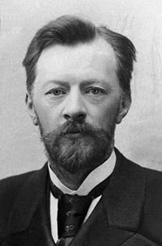
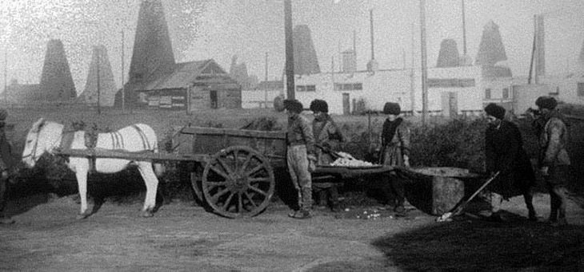
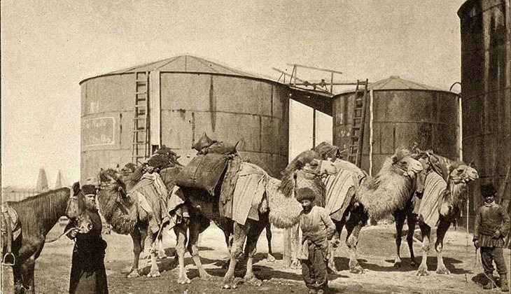

5 января 1878 года, Баку. На нефтепромысле Балаханы запускают паровой насос. Нефть уходит в трёхдюймовую стальную трубу и — впервые в истории промышленности — сама течёт десять километров до нефтеперегонных заводов Чёрного города. Ни бочек. Ни подвод. Ни возчиков. У трубы стоит автор проекта — инженеру Владимиру Шухову двадцать четыре года.

Кто этот человек. Выпускник Императорского технического училища, Шухов отказался от кафедры у самого Пафнутия Чебышёва — не хотел чистой математики, хотел строить. Про него потом скажут: «первый инженер Российской империи» и «русский Леонардо». Он брал любую задачу — нефть, вода, мосты, башни, котлы — и решал её расчётом там, где другие действовали на глазок.
В чём была загвоздка. Баку 1870-х — нефтяная столица мира, задыхавшаяся от собственной нефти. Добыть её научились, а вот доставить с промыслов на заводы — нет. Нефть заливали в деревянные бочки, грузили на арбы, и сотни возчиков днём и ночью тянулись через город. Перевозка бочки стоила дороже самой нефти в ней. Возчики держали монополию и цены — и промышленники им платили, потому что выхода не было.


Как родилась идея. Молодой Шухов, приехавший в Баку от конторы инженера Бари, увидел в этом хаосе задачу по гидравлике. В Америке уже пробовали качать нефть по коротким трубам — но без строгой теории, методом проб и ошибок. Шухов первым вывел точные формулы: какой диаметр трубы нужен под заданный поток, какое давление создавать насосами, где ставить перекачечные станции, как меняется вязкость нефти с температурой. Это была не прикидка — это была наука о трубопроводах, создаваемая с нуля.
Что он построил. Нефтепровод Балаханы–Чёрный город: около десяти километров, диаметр три дюйма, паровые насосы, пропускная способность — до 80 тысяч пудов нефти в сутки. Заказ оплатило «Товарищество братьев Нобель» — та самая семья, чьё имя носит знаменитая премия. Себестоимость перекачки оказалась в разы ниже бочечной. Формулы Шухова опубликованы — по ним до сих пор проектируют трубопроводы по всему миру.
Испытания. Возчики, терявшие заработок, грозили разрушить трубу — её пришлось охранять. Но экономика убедила всех быстрее любых слов: уже через несколько лет Шухов строил в Баку новые нитки, а через десятилетие трубопроводы стали отраслевым стандартом. В 1907 году по проекту Шухова заработал крупнейший в мире на тот момент керосинопровод Баку–Батум длиной 835 километров.
Горькая часть. Второе великое нефтяное изобретение Шухова украли — вежливо, по-патентному. В 1891 году он запатентовал крекинг: разложение тяжёлой нефти на лёгкие фракции нагревом под давлением — основу производства бензина. Россия патент не использовала: бензин был никому не нужен, автомобилей ещё не было. А в 1913 году американец Уильям Бартон запатентовал в США почти то же самое — и Америка стала бензиновой державой. Когда в 1923 году делегация фирмы «Синклер» приехала в Москву разбираться в патентном споре, Шухов показал им свой патент 1891 года. Американцы признали: русский был первым. Но промышленность и деньги остались за океаном.
Финал. Всё, что течёт сегодня по миллионам километров труб — нефть, газ, бензин, — течёт по формулам Шухова 1878 года. А сам он оставил после себя ещё и гиперболоидные башни (та самая Шуховская на Шаболовке), сетчатые перекрытия ГУМа и Пушкинского музея, нефтеналивные баржи, крекинг и около двухсот изобретений.
Человек. Владимир Григорьевич Шухов (1853–1939) — родился в Грайвороне Курской губернии в небогатой дворянской семье. Работал до 85 лет. От гонораров за многие проекты отказывался, повторяя, что инженер обязан стране. Погиб нелепо и трагически: опрокинул на себя свечу, получил ожоги и умер через пять дней — в 1939 году, всемирно признанным классиком инженерии.
«Наука и жизнь» · «Человек-фабрика» — инженерная биография и крекинг 1891 года
«Российская газета» · «Главный русский инженер» — к 170-летию Шухова
Культура.РФ · биография Владимира Шухова — работы, даты жизни, судьба построек
Фотографии: архивные снимки Балаханских промыслов и Баку 1880–1890-х годов, авторы неизвестны, общественное достояние.